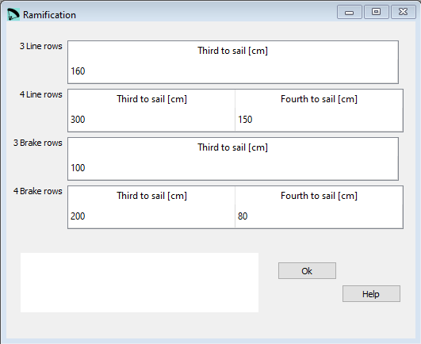

Ramification¶
In the Ramification window you define the height of the line levels for main and brake lines.
{kind=link}
Raw data:
***************************************************
* 11. Ramification lengths
***************************************************
3 160
4 300 150
3 100
4 200 80

Main lines 3 levels¶
If you have only 3 levels the definition of one value will be needed.
Third to sail¶
Distance l2 in the upper half of the drawing above.
Main lines 4 levels¶
If you have 4 levels, you need to define two values.
Third to sail¶
Distance l3 in the lower half of the drawing above.
Fourth to sail¶
Distance l2 in the lower half of the drawing above.
Brake lines 3 levels¶
If you have only 3 levels the definition of one value will be needed.
Third to sail¶
Distance l2 in the upper half of the drawing above.
Brake lines 4 levels¶
If you have 4 levels, you need to define two values.
Third to sail¶
Distance l3 in the lower half of the drawing above.
Fourth to sail¶
Distance l2 in the lower half of the drawing above.
A more detailed description you can find here Laboratori d'envol website.